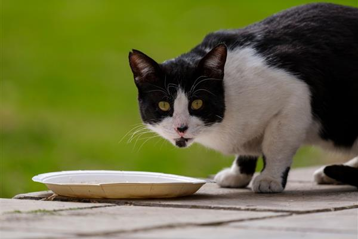

六册手记：日常养护、行为解读、禁忌食品、饮水泌尿、梳毛洗澡、疫苗体检。先把基础做对，再谈养得好。

饮食、饮水、猫砂、环境与健康管理。把每天的小事做对，猫就少生病。

叫声、尾巴、耳朵和日常动作都在表达。读懂信号，少一点误会。

巧克力、洋葱、葡萄、木糖醇……一张清单，先记住不能喂的东西。

每天该喝多少、尿团怎么看、哪些是泌尿急症，一次讲清。

不同毛长的梳毛频率、洗澡边界、掉毛和毛球处理。

疫苗时间表、驱虫频率和体检项目，提前记下来少慌乱。
不是所有异常都要立刻冲医院，但下面这些信号值得优先处理。
蹲很久只有几滴尿、叫、舔生殖器，公猫可能是尿道阻塞。
安静时也呼吸快、舌头发紫，别等，直接联系医院。
记下吃了什么、多少、什么时候，带上包装联系医院。
幼猫、老年猫更容易脱水，不要只靠禁食观察。
猫长时间不进食可能引发脂肪肝，尤其胖猫。
先量体温、看饮水排便；持续不改善就预约检查。